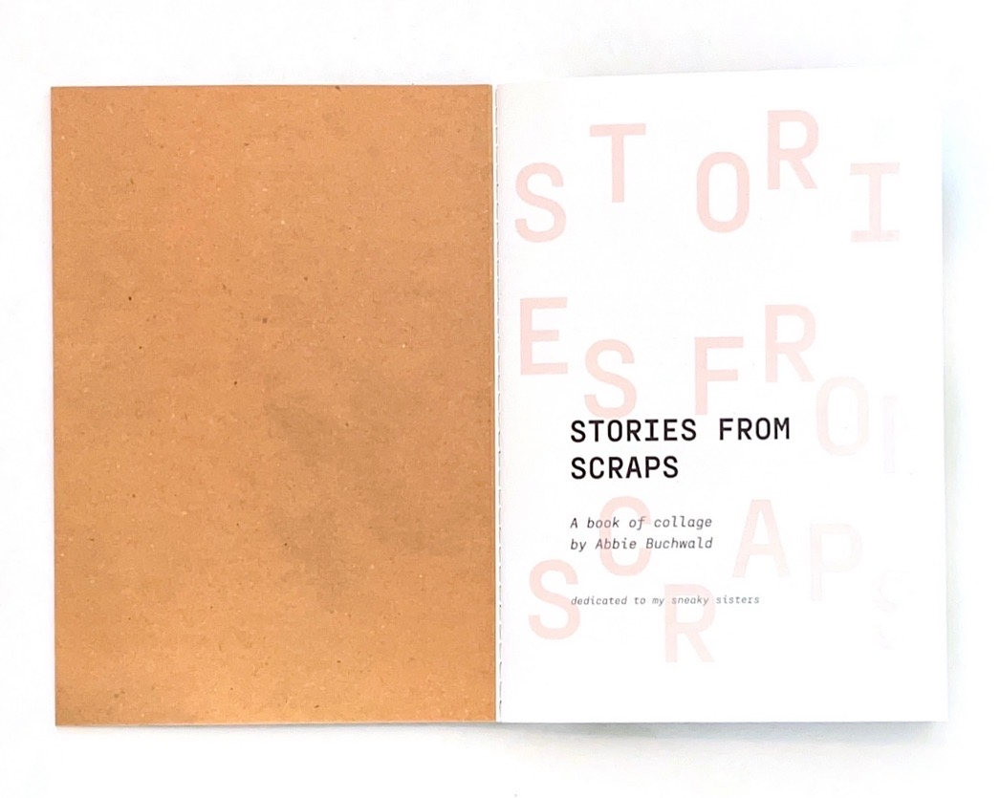
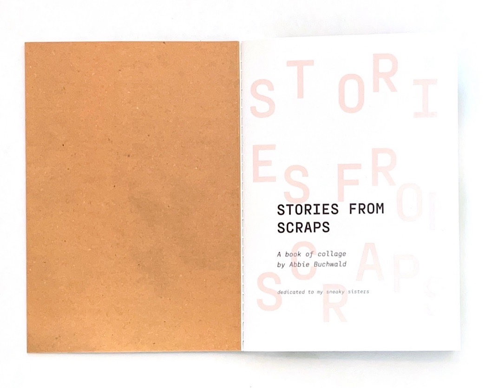

“Stories From Scraps” is a collection of collages made in 2022 while Abbie studied art in Orvieto, Italy. Twelve of the collages were made in a week for a mixed media course, then eight more were commissioned by the program director to be made into a booklet. This booklet was then used as a gift for the 25th anniversary of the Gordon in Orvieto program, given to alumni and sponsors. The pieces are made completely from found material;paper scraps from classes, candy wrappers, napkins from local cafes, tea bags, etc. The tangible remnants of daily life in Orvieto used to invite the viewer into a journey through the city reminds us to slow down and meditate on the little things
 
